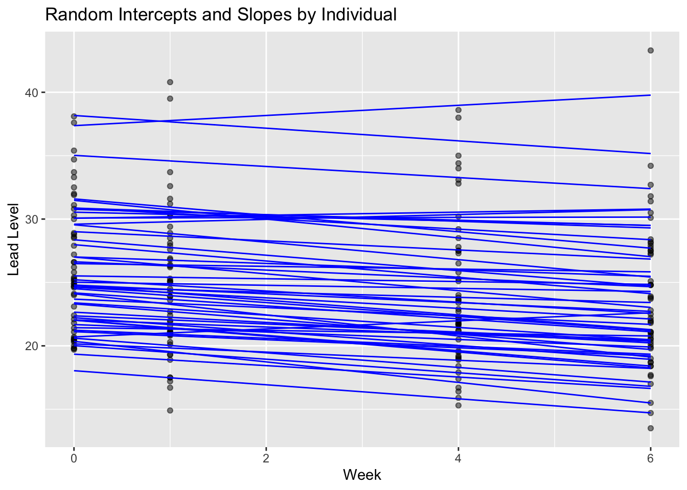

Warning: package 'dplyr' was built under R version 4.4.3Module 1C Random Intercepts and Slopes
From Random Intercepts to Random Slopes: 
- Consider the mixed effects model with a vector of predictors \(x_{ij}\):
\[ y_{ij} = (\beta_0 + \theta_{0i}) + (\beta_1 + \theta_{1i}) x_{ij} + \epsilon_{ij}, \quad \epsilon_{ij} \overset{iid}{\sim} N(0, \sigma^2) \]
\(\beta_{0i} = \beta_0 + \theta_{0i}\) child specific intercept or child specific average.
\(\beta_{1i} = \beta_1 + \theta_{1i}\) child specific rate of change or slope.
\(\beta_0, \beta_1\) the intercept and slope that does not vary across subjects.
\(\sigma^2\) within subject variability ie measurement error.
Random Effects Covariance Structure
The random effects are modeled jointly as:
\[ \begin{pmatrix}\theta_{0i} \\ \theta_{1i} \end{pmatrix} \sim N \left( \begin{pmatrix} 0 \\ 0 \end{pmatrix}, \begin{pmatrix} \tau^2_0 & \rho \tau_0 \tau_1 \\ \rho \tau_0 \tau_1 & \tau_1^2 \end{pmatrix} \right) \] where:
- \(\tau_0^2\) is the variance of random intercepts,
- \(\tau_1^2\) is the variance of random slopes,
- \(\rho\) is the correlation between intercepts and slopes.
This structure allows us to model not just variation in starting points (intercepts) and rates of change (slopes), but also how they are related (e.g., do groups with higher baselines tend to change faster?).
Fitting the Random Intercept and Slope model in R
Lets fit the model using the tlc data:
library(ggplot2)
library(dplyr)
library(gridExtra)
library(lme4)
tlcdata <- readRDS("data/tlc.RDS")
placebo_data = tlcdata %>% filter(treatment == "placebo")
fit_random <- lmer(lead ~ week + (week|id), data = placebo_data)
summary(fit_random)Linear mixed model fit by REML ['lmerMod']
Formula: lead ~ week + (week | id)
Data: placebo_data
REML criterion at convergence: 1053.3
Scaled residuals:
Min 1Q Median 3Q Max
-2.20808 -0.49837 -0.02268 0.47100 2.30541
Random effects:
Groups Name Variance Std.Dev. Corr
id (Intercept) 23.3113 4.8282
week 0.1581 0.3976 0.02
Residual 4.5016 2.1217
Number of obs: 200, groups: id, 50
Fixed effects:
Estimate Std. Error t value
(Intercept) 25.68536 0.72018 35.665
week -0.37213 0.08437 -4.411
Correlation of Fixed Effects:
(Intr)
week -0.164Interpretation:
- Child-specific intercept: \((\beta_0 + \theta_{0i}) \sim N(25.68, 23.31)\).
- Child-specific slope: \((\beta_1 + \theta_{1i}) \sim N(-0.372, 0.158)\).
- The correlation \(\rho\) between \((\beta_{0i}, \beta_{1i}) = 0.02\).
- The fixed effect of week \(\hat{\beta}_1 = -0.372\) is the population-average slope. To test whether lead levels change significantly over time, use the fixed effect t-test for \(\beta_1\), not the spread of the random effects distribution.
Below we visualize the individual trajectories based on both fixed effects and random intercepts and slopes.
library(ggplot2)
ggplot(placebo_data, aes(x = week, y = lead, group = id)) +
geom_point(alpha = 0.5) +
geom_line(aes(y = predict(fit_random)), color = "blue") +
labs(title = "Random Intercepts and Slopes by Individual",
x = "Week", y = "Lead Level")
Comparing Models
We take the random-intercept model as the baseline and ask: do subjects also differ in their trajectories (slopes)? In other words, does adding a random slope improve fit over a random-intercept-only model?
Akaike’s Information Criterion
A common way to compare candidate models fit to the same data is AIC. It is a popular approach to choosing which variables should be in the model. Note lower is better, where rule of thumb (RoT) is a different of 2+ is substantially better.
\[ AIC = -2l(\mathbf{\hat{\theta}}) + 2p \] where \(l(\mathbf{\hat{\theta}})\) is the log-likelihood for all parameters \(\mathbf{\theta}\) and \(p\) is the number of parameters.
Likelihood Ratio Test (Nested models)
When one model is a special case of another (e.g., in the case of nested models), use a LRT:
\[ \Lambda = -2 \left\{l(\text{reduced}) - l(\text{full})\right\} = 2\left\{l(\text{full}) - l(\text{reduced})\right\} \]
A larger \(\Lambda\) indicates the full model fits better.
It is important to note \(REML\) removes information about \(\beta\) so REML log-likelihoods are not directly comparable when your models have different fixed effects (not apples-to-apples). For model comparisons both uses the maximum likelihood so use \(REML=FALSE\) to set the parameter estimation to MLE.
Here are some important caveats when using AIC or LRT:
AIC is a relative measure. A lower AIC only says “better than the other model on this data,” not “good.”
Must be comparable fits. Same dataset, same likelihood. Don’t compare ML vs REML.
LRT requires nested models. You can’t use it for non-nested comparisons.
Asymptotic reference: The \(\chi^2\) approximation can be poor in small samples. This makes p-values too large (favors simpler models).
Model Comparison for TLC data
With the random-intercept model as our baseline, we now ask whether children also differ in their rates of change over time. Using the TLC data, we’ll fit (1) a random-intercept (RI) model and (2) a random-intercept-plus-slope (RI+RS) model, then compare them by likelihood (AIC and LRT). Since both models share the same fixed effects, we can compare them using REML fits — lme4’s anova() refits with ML automatically in this case. Lower AIC and a significant LRT would support adding the random slope.
# Compare random-intercept (RI) vs random-intercept+random-slope (RI+RS)
library(lme4)
# Same fixed effects → compare with REML
m_ri <- lmer(lead ~ week + (1 | id),data = tlcdata, REML = TRUE)
m_ris <- lmer(lead ~ week + (week | id),data = tlcdata, REML = TRUE)
AIC(m_ri, m_ris) # lower AIC indicates better fit df AIC
m_ri 4 2703.061
m_ris 6 2701.772anova(m_ri, m_ris)# LRT for nested random-effects structuresData: tlcdata
Models:
m_ri: lead ~ week + (1 | id)
m_ris: lead ~ week + (week | id)
npar AIC BIC logLik deviance Chisq Df Pr(>Chisq)
m_ri 4 2701.6 2717.5 -1346.8 2693.6
m_ris 6 2700.3 2724.2 -1344.1 2688.3 5.297 2 0.07076 .
---
Signif. codes: 0 '***' 0.001 '**' 0.01 '*' 0.05 '.' 0.1 ' ' 1Interpretation:
We compared the RI vs RI+RS model using REML fits and LRT.
- The \(\chi^2(2) = 5.3, \text{p-value} = 0.071\rightarrow\) adding a random slope yields only marginal improvement and is not significant at \(\alpha = 0.05\).
- AIC: \(RI = 2703, RI+RS = 2702 \rightarrow\), Change in AIC is 1 (RoT \(\geq 2\)). So this change is trivial.
There is limited evidence that the subject-specific slopes are needed. The tiny AIC gain and the non-significant chi-square test would suggest to retain the random-intercept-only model.
Summary
| Section | Description | |
|---|---|---|
| Model: random intercepts + slopes | For subject \(i\) and observation \(j\): \(y_{ij} = (\beta_0+\theta_{0i}) + (\beta_1+\theta_{1i})\,x_{ij} + \epsilon_{ij}, \qquad \epsilon_{ij}\stackrel{iid}{\sim}N(0,\sigma^2).\) Here \(\beta_0,\beta_1\) are population (fixed) effects; \(\theta_{0i}\) and \(\theta_{1i}\) are subject-specific deviations (random intercept and random slope). | |
| Random-effects covariance | \(\begin{pmatrix}\theta_{0i}\\ \theta_{1i}\end{pmatrix}\sim N\!\left(\begin{pmatrix}0\\0\end{pmatrix},\; \begin{pmatrix}\tau_0^2 & \rho\,\tau_0\tau_1\\ \rho\,\tau_0\tau_1 & \tau_1^2\end{pmatrix}\right).\) \(\tau_0^2\): variability in intercepts; \(\tau_1^2\): variability in slopes; \(\rho\): correlation between intercepts and slopes (e.g., do higher baselines change faster/slower?). | |
| Fitting & interpretation (R) | Example: `lmer(lead ~ week + (week …)`. Fixed effects \((\beta_0,\beta_1)\) give the population intercept and average rate of change. Random-effect variances \((\tau_0^2,\tau_1^2)\) quantify between-subject heterogeneity in starting level and trajectory; \(\rho\) summarizes their association. | |
| Visualizing trajectories | Overlay predicted lines per subject using predict(fit) to show how intercepts and slopes vary across individuals while following the population trend. |
|
| Model comparison (RI vs RI+RS) | AIC (lower is better): \(\mathrm{AIC}=-2\ell(\hat\theta)+2p\); a difference \(\gtrsim 2\) is a common rule-of-thumb for meaningful improvement. LRT (nested models): \(\Lambda=2\{\ell(\text{full})-\ell(\text{reduced})\}\), compare to \(\chi^2\) with df = parameter difference. Use ML for comparison: fit both models with REML = FALSE. |
|
| TLC example (results) | Comparing random-intercept (RI) vs random-intercept+random-slope (RI+RS): LRT \(\chi^2(2)=5.3,\; p=0.071\) (not significant at \(\alpha=0.05\)); AIC: \(\text{RI}=2703,\ \text{RI+RS}=2702\) (ΔAIC = 1, trivial). Conclusion: limited evidence to include a random slope; RI model is adequate here. |